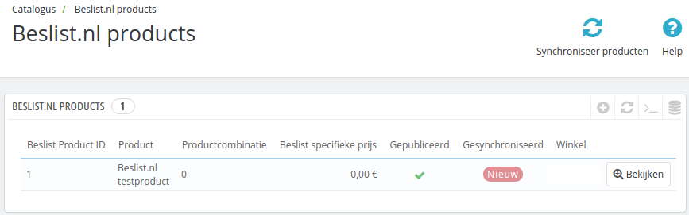

Inhoud
Prestashop producten op Beslist
Na het installeren van de module zijn er nieuwe opties in het menu van Prestashop gekomen. Een daarvan is Catalogus -> Beslist.nl producten. Wanneer u daar naartoe navigeert, ziet u een overzicht van alle producten in het systeem die op Beslist.nl gepubliceerd worden.

Producten selecteren
Binnen Prestashop kunt u nu per product instellen hoe deze op Beslist.nl weergegeven dient te worden. Op de product bewerkpagina (onder Catalogus) vindt u een tab met de titel Beslist.nl Winkelwagen integratie. Op die tab staan de instellingen voor Beslist.nl.

Op deze tab ziet u voor alle productcombinaties een optie om deze te publiceren (via het vinkje onder Publiceren). Ook kunt u per combinatie een specifieke Beslist geadverteerde prijs instellen (in het veld Specifieke prijs). Klik voor een product aan dat deze op Beslist gepubliceerd moet worden.
Producten synchroniseren
Wanneer er een nieuw product wordt geselecteerd voor Beslist, wordt deze pas na de volgende productfeed run meegenomen. Het duurt dus meestal een tijd voordat uw product pas zichtbaar is. Nadat het product zichtbaar is kunnen voorraad en prijsupdates wel snel verwerkt worden.
De volgende statussen zijn mogelijk voor een Beslist publicatie:
-
OK- Dit product is correct naar Beslist gemeld -
Nieuw- Dit product is nieuw en nog niet naar Beslist gemeld -
Voorraad bijgewerkt- Van dit product is de voorraad bijgewerkt, maar nog niet naar Beslist gemeld -
Info bijgewerkt- Van dit product is de informatie (bijv. de prijs) bijgewerkt, maar nog niet naar Beslist gemeld
Als er in het productenoverzicht een andere status dan OK staat, kan via de knop Synchroniseer producten bovenin de synchronisatie handmatig worden gestart. Indien er foutmeldingen ontstaan tijdens de synchronisatie krijgt u een bericht. Wanneer de API onbeschikbaar is kunt u het later nog eens proberen, maar als er foutieve data gestuurd is, moet u de producten wellicht aanpassen.
Veelgestelde vragen
Waarom krijg ik 404 meldingen als ik mijn product opsla?
Dit wordt veroorzaakt doordat het product nog niet bij Beslist bekend is. Beslist moet eerst de productfeed opnieuw inlezen. Dit gebeurt volgens een bepaald schema (op het moment van schrijven 1 maal daags om 8:00). Zie de beslist handleidingen voor meer informatie.
De producten waar 404 meldingen voor komen, kunnen de dag erna via de knop Synchroniseer producten opnieuw aangeboden worden. Daarna blijft het goed gaan.